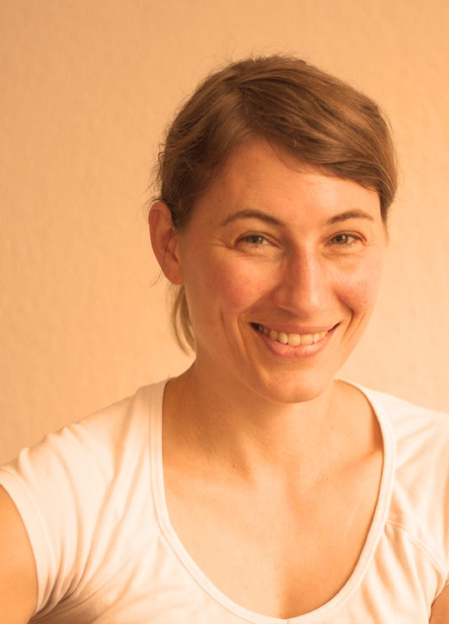

Ich möchte Menschen begleiten, die bereits auf dem Weg sind oder sich auf den Weg machen wollen, ihre eigene Gesundheit in die Hand zu nehmen.
Dazu möchte ich betonen: Ich sehe mich nicht als Heilerin in dem Sinne, dass ich deine Beschwerden verbessere oder „wegnehme“. Du selbst bist dein eigener Heiler, deine eigene Heilerin. Das wiederum ist eine Verantwortung, die wir uns bewusst machen sollten. Wir schauen gemeinsam, wie wir deinen Körper, deinen Geist und deine Seele unterstützen und deine Selbstheilungskräfte aktivieren oder weiter ankurbeln können.
Da dies ganz unterschiedlich ist, so wie wir Menschen auch sehr unterschiedlich und individuell sind, habe ich verschiedene Therapieansätze, die begleitend eingesetzt werden können.
Basis meiner Arbeit ist das Immunsystem. Ich bin tief davon überzeugt, dass die Ursachen gewisser gesundheitsbeeinträchtigender Symptome und der meisten Krankheiten Ausdruck einer Überlastung des Immunsystems sind. Diese Überlastungen sind mannigfaltig, allen voran aber sind Stress und der Darmzustand von übergeordneter Bedeutung.
Die Balance aus Eigenverantwortung und bewusstem Leben ist der Schlüssel zu einem glücklicheren Leben.

Über mich
(Er-)forschend
(Er-)forschend – so würde ich eine meiner Lieblingseigenschaften beschreiben. Ich hatte schon immer den Drang, Dingen auf den Grund zu gehen. Ich freue mich heute jeden Tag, dass ich Menschen hin zu einer natürlichen, gesünderen und selbstverantwortlichen Lebensweise begleiten darf.
Es macht mir Spaß, gemeinsam zu forschen und herauszufinden, was „nicht rund läuft“, was der Körper ausdrücken und was angeschaut werden möchte.
Durchführung von (weiterer) Diagnostik zur Abklärung der Ursache
Therapieplan
Erstellung eines individuellen Therapieplans
Begleitung und Nachsorge
Auf Basis des Therapieplans individuelle Begleitung und Anpassung
★★★★★
Das Besondere an Frau Dr. Simone Toelstede ist, dass sie in Lebensmittelchemie promoviert hat und in diesem Zweig einen sehr alternativen und eigenen Weg einnahm, bevor sie zur Heilpraktikerin wurde. Daher greift ihr Blick sehr tief, und ihre Wahrnehmung der individuellen Ursachen der Beschwerden fällt recht wissenschaftlich aus. Man spürt in jeder Sitzung ihr großes Engagement und die ganzheitliche Fürsorge ihrer Arbeitsweise.
Nach Blutanalysen erhielt ich von ihr sehr viel Inspiration zu Ernährung und Ergänzungsmitteln, die mir tagtäglich helfen. Die Körperarbeit von Frau Toelstede beeindruckt mich immer wieder, da sie sehr ausgefallene Grifftechniken anwendet und dabei sehr feinfühlig handelt. Ihr Wissen und Verständnis von Körper, Geist und Seele und deren wechselseitiger Wirkung motiviert sehr. Nach den Sitzungen bin ich immer entspannt, gelassen und voller Freude, in dieses angenehme, wohltuende und „neuartige“ Körpergefühl hineinzuleben.
Aus meiner Warte sage ich, dass Frau Dr. Simone Toelstede eine großartige Heilpraktikerin ist, und zwar mit Verstand, Herz und Hand … von ihrer Sorte brauchen wir mehr in unserem Land.
(Er-)forschend – so würde ich eine meiner Lieblingseigenschaften beschreiben. Ich hatte schon immer den Drang, Dingen auf den Grund zu gehen, und bin entsprechend neugierig. Auf meiner bisherigen Reise durfte ich viel ausprobieren und kennenlernen: von der Lebensmittelforschung über einen kleinen Manufakturbetrieb bis hin zum Thema Gesundheit, das mich schon seit meiner Kindheit begleitet.
Allen voran wollte ich immer viel wissen über alles, was es auf der Erde so gibt. Mittlerweile bin ich mit der Ausbildung zur Heilpraktikerin Stück für Stück auch in die Bereiche „Fühlen, Intuition, Spiritualität“ eingetaucht.
Ich bin verheiratet, glückliche (Co-)Mutter unserer Tochter und freue mich jeden Tag, dass ich Menschen hin zu einer natürlichen, gesünderen und selbstverantwortlichen Lebensweise begleiten darf. Es macht mir Spaß, gemeinsam zu forschen und herauszufinden, was „nicht rund läuft“, was der Körper ausdrücken und was angeschaut werden möchte.
„Es kommt darauf an, den Körper mit der Seele und die Seele durch den Körper zu heilen.“ – Oscar Wilde
Vita & Ausbildungen
1998 – 2007Studium & Promotion in der Lebensmittelchemie
2007 – 2016Leiterin / wissenschaftliche Führungskraft in verschiedenen Forschungseinrichtungen der Lebensmittelbranche
2013Ausbildung zum Ayurveda-Koch (Europäische Akademie für Ayurveda)
2016 – 2020Selbstständige Beraterin von Food-Startups
Diagnostisch setze ich in meiner Praxis labormedizinische und bewährte alternative Verfahren ein. Für eine umfassende Beurteilung der individuellen Ursachen arbeite ich ausschließlich mit akkreditierten Laboren auf höchstem technischem Niveau zusammen. Vielschichtige Erkrankungen brauchen oft eine differenzierte Sichtweise. Dazu gehören alternative diagnostische Verfahren, kombiniert mit wissenschaftlichen Ergebnissen, zum Beispiel aus Laboruntersuchungen. So erhalten wir ein ganzheitliches diagnostisches Bild.
Mit modernster Labordiagnostik lässt sich bestimmen bzw. abklären:
Intoleranzen
Nahrungsmittelunverträglichkeiten
Funktion und Struktur der Magenschleimhaut
Untersuchung des Mikrobioms
Funktion der Bauchspeicheldrüse, Leber und Galle
Schilddrüsenfunktion
Nebennierenfunktion
Hormone und sonstige Botenstoffe
Mitochondrienfunktion
Zahnstatus
Schilddrüse
Nebenniere
Mikrobiom
Mitochondrien
Jeder Wert wird im Verhältnis zum Referenzbereich eingeordnet, so entsteht ein umfassendes Bild. Schematische Darstellung, keine Messwerte.Jetzt Termin buchen
Laut WHO ist Stress das größte Gesundheitsrisiko des 21. Jahrhunderts. In unserer modernen Welt sind wir ständig Reizen und Informationen ausgesetzt. Allein dadurch ist unsere innere Balance gestört. Zusätzliche Anforderungen von Familie, Beruf oder Umfeld führen zu einer dauernden Stressbelastung für unseren Körper.
Dabei ist Stress für unseren Organismus grundsätzlich nichts Ungewöhnliches. Die Nebenniere schüttet die Stresshormone Cortisol und Adrenalin aus, wodurch wir Leistung erbringen können, konzentriert und hellwach sind. Hält der Stress jedoch dauerhaft an, bleibt der Mensch in ständiger Alarmbereitschaft, und unser Immunsystem wird entsprechend dauerhaft belastet.
Stress als Ursache vieler Krankheiten. Als Folge kann sich entwickeln:
Bluthochdruck, dadurch erhöhtes Risiko für Herzinfarkt und Schlaganfall
Insulinresistenz / Diabetes
Fettleber, Lebererkrankungen und Entgiftungsstörungen
Verdauungsbeschwerden, Leaky-Gut-Syndrom u. v. m.
Entwicklung von Autoimmunerkrankungen
Psychische Erkrankungen wie Burn-out, Depression usw.
Diagnostik und Therapie
Als Diagnostik für unseren aktuellen psychischen und physischen Gesundheitszustand kann der Rhythmus der Herzfrequenz gemessen werden, die sogenannte Herzratenvariabilität (HRV). Diese Analytik stammt aus der Kardiologie und ist eine wissenschaftliche und evidenzbasierte Diagnostik.
Dabei gilt: Je höher die Variabilität, desto besser die Regulationsfähigkeit des autonomen Nervensystems und damit die Anpassungsfähigkeit gegenüber Stress. Die Analyse der HRV zeigt, wie hoch die aktuelle Stressbelastung und die Stressresilienz sind. Dabei weicht das subjektive Empfinden meist von der objektiven Messung ab.
Je höher die Variabilität der Abstände zwischen den Herzschlägen, desto besser die Regulationsfähigkeit. Schematische Darstellung, keine Messwerte.
In meiner Praxis führe ich sowohl Kurzzeit- als auch Langzeit-HRV-Messungen durch (Firma BioSign).
Kurzzeit-HRV
Dauer ca. 15–20 Minuten. Die Messung erfolgt mit zwei Klemmelektroden, die typischerweise an den Handgelenken platziert werden. Sie liefert eine erste, grundlegende und aktuelle Einschätzung des Zustands des vegetativen Nervensystems.
Langzeit-HRV
Dauer 24 Stunden. Die Messung erfolgt mit einem kleinen EKG-Rekorder, der kaum spürbar an der Brust sitzt. Typische Stressoren im Laufe des Tages lassen sich explizit ausweisen, und der Schlaf kann hinsichtlich Tiefe und Phasen und damit der Regeneration beurteilt werden.
Adrenaler Stress-Test (Cortisol-Tagesprofil)
Unterstützend kann ein Speicheltest auf den adrenalen Stress-Index (Cortisol-Tagesprofil) sowie auf weitere Stresshormone wie Noradrenalin und Adrenalin (unter anderem auch Serotonin) durchgeführt werden.
Cortisol folgt einem Tagesrhythmus: morgens hoch, abends niedrig. Bei dauerhafter Belastung kann sich dieser Verlauf abflachen. Schematische Darstellung, keine Messwerte.
Je nach Befund und Symptomatik erstelle ich einen individuellen Therapieplan zur Stressbewältigung und zum Umgang damit.
Der Zellstoffwechsel ist der Dreh- und Angelpunkt unserer Gesundheit und Vitalität. Unser Körper besteht aus 70 Billionen Zellen, und in diesen wiederum befinden sich je ca. 1500–5000 Kraftwerke, die sogenannten Mitochondrien. Sie sind für unsere Energieversorgung zuständig. Gleichzeitig sind diese kleinen Kraftwerke, die sich besonders konzentriert in Herzmuskel- und Nervenzellen finden, sehr anfällig für die Umwelteinflüsse, die das heutige Leben mit sich bringt.
Bereits jeder dritte Mensch ab 20 Jahren (!) hat eine sogenannte sekundäre Mitochondriopathie.
Ungesunde Ernährung, Schlafdefizit, chronischer Stress, Alkohol, Rauchen, Elektrosmog, Schwermetalle … all das beeinträchtigt die Mitochondrien und ihre Arbeit. Das Wohlbefinden und der Gesundheitszustand leiden nach und nach darunter: Erschöpfung, chronische Müdigkeit, Konzentrationsprobleme und Stressanfälligkeit zeigen sich. Werden die Symptome missachtet, arbeiten Körper und Energiesystem immer ineffizienter, bis das Fass irgendwann überläuft: Chronische Krankheiten, Autoimmungeschehen und tumoröse Prozesse gewinnen die Oberhand.
Was genau ist „IHHT“?
Die IHHT (intermittierende Hypoxie-Hyperoxie-Therapie) ist eine spezielle Sauerstofftherapie, oft auch „Höhentraining“ genannt, die die Zahl intakter Mitochondrien wieder erhöht. Dieses sogenannte Zelltraining folgt einer einfachen Strategie:
Durch einen schwankenden Sauerstoffgehalt werden die Kraftwerke unter akuten Stress gesetzt, sodass alte und beschädigte nicht standhalten können und zugrunde gehen. Damit ist Platz für gesunde Mitochondrien und die Entstehung neuer. Ein rhythmischer Wechsel von sauerstoffärmerer (Hypoxie) und sauerstoffreicherer (Hyperoxie) Luft führt zu einem Trainingseffekt für sämtliche Körperzellen, ähnlich wie bei sportlicher Betätigung in der Höhe, nur um ein Vielfaches spezifischer und effektiver. Der Fettstoffwechsel wird angeregt, das Immunsystem gestärkt.
Dabei ist das Zelltraining nicht anstrengend und eignet sich deshalb besonders auch für Menschen mit chronischem Fatigue-Syndrom, für Burn-out-Betroffene und bei generellen krankheitsbedingten Einschränkungen des Bewegungsapparates.
Die Indikationen sind mannigfaltig und reichen vom präventiven Einsatz bis hin zu chronischen Erkrankungen. Einige Beispiele, wo ein Einsatz sinnvoll sein kann:
Ein Trainingszyklus umfasst meist 12–15 Sitzungen à ca. 45 Minuten. Du liegst dabei ganz entspannt auf einer Liege und atmest über eine Maske im Wechsel sauerstoffärmere und sauerstoffreichere Luft ein. Die Zyklen folgen einem individuell angepassten Trainingsplan.
Die Ganzkörper-Hyperthermie (GKH), auch systemische Hyperthermie genannt, ist die kontrollierte, von außen herbeigeführte Erhöhung der Körperkerntemperatur zu therapeutischen Zwecken. Der Ansatz beruht auf dem Prinzip des Fiebers als natürlichem Immunmechanismus: Die Erhöhung der Kerntemperatur aktiviert und reguliert eine außergewöhnliche Immunreaktion.
Die Wirksamkeit wurde für mehrere Indikationen auf klinischen Evidenzniveaus dokumentiert. Zu den Wirkmechanismen zählen eine erhöhte Gewebedurchblutung und Stoffwechselaktivität sowie hormonelle und immunologische Effekte.
RIFETECH® ist eine innovative Form der Plasmatherapie, die elektromagnetische Frequenzen nutzt, um das Immunsystem zu unterstützen. Plasma ist neben fest, flüssig und gasförmig der vierte Aggregatzustand. Wird einem Gas zusätzliche Energie zugeführt, ionisiert es, und es entstehen Ionen, die gezielt Schwingungen und Informationen transportieren. Diese physikalische Grundlage macht sich RIFETECH zunutze, um zelluläre Prozesse positiv zu beeinflussen.
Präzise Frequenzübertragung für messbare Wirkung
Die Plasmaröhre von RIFETECH sendet gepulste elektrische und magnetische Spektren aus, die bis in den Terahertz-Bereich reichen. Die Wirkung beruht auf einer breiten Frequenzbandbreite von 1 Hz bis 900 kHz und der präzisen Abstimmung der Frequenzen auf die Zielstrukturen. Die Frequenzen werden auf Lichtgeschwindigkeit umgerechnet und anschließend durch die Länge der DNA geteilt, um die gewünschte Resonanzfrequenz exakt zu treffen. Dieser Prozess ermöglicht eine elektrodynamische Wirkung auf die Zellen.
Anwendungsgebiete und Programme
RIFETECH-Plasma kann unterstützend eingesetzt werden, wenn das Immunsystem geschwächt oder angegriffen ist, zum Beispiel bei chronischen Erkrankungen oder Autoimmunerkrankungen. Das Gerät bietet eine Vielzahl von Behandlungsprogrammen, die individuell angepasst werden können.
Behandlungsablauf: sanft und nebenwirkungsfrei
Die Intensität der Behandlung hängt vom Abstand zum Gerät ab: je näher, desto stärker. Die Plasmastrahlung ist nicht ionisierend und hat keine messbaren gesundheitsschädlichen oder energetischen Nebenwirkungen. Je nach gewähltem Programm dauert die Behandlung pro Tag etwa 1 bis 2 Stunden. Du kannst währenddessen entspannt liegen, meditieren oder ein Buch lesen. Die RIFETECH-Sitzungen fügen sich leicht in deinen Alltag ein.
Der Medkey ist ein innovatives, bioadaptives Impulstherapiegerät aus der Keyserie (Keytec). Er stimuliert über die Haut gezielt Nervenrezeptoren und unterstützt so körpereigene Regenerations- und Regulationsmechanismen. Durch die adaptive Rückkopplung passt sich jeder Impuls der individuellen Gewebereaktion an – für eine sanfte, aber wirksame Behandlung akuter und chronischer Beschwerden.
Wirkung & Anwendung
Aktiviert Selbstregulation und Schmerzlinderung über neurophysiologische Mechanismen
Fördert Mikrozirkulation, Lymphfluss und Zellstoffwechsel
Entspannt die Muskulatur und reduziert Entzündungsmediatoren
Unterstützt die Regeneration nach Verletzungen oder Operationen
Wirkt ganzheitlich und lässt sich ideal in multimodale Therapiekonzepte integrieren
Organspezifische Funktionsstörungen (z. B. Leber, Lunge, Blase …)
Behandlungsrhythmus
Akut 1–2× pro Woche, jeweils ca. 15–30 Minuten. Chronisch über mehrere Wochen mit individueller Anpassung. Kombinierbar mit IHHT, Infusionstherapie oder manueller Regulationstherapie.
Eigentlich ist unser Körper so geschaffen, dass er durch hochwertige Nahrung, genügend Bewegung (bestmöglich in der Natur) und psychische Ausgeglichenheit (wenig Stress) sämtliche Nähr- und Vitalstoffe gut aufnehmen und verwerten kann.
Die Realität sieht heutzutage jedoch ganz anders aus. Dauerstress durch Alltag, Familie und/oder Job, mangelnde Bewegung, Rauchen, Stadtluft und Fast Food ohne Nährstoffe rauben unserem Körper in kürzester Zeit Vitamine, Antioxidantien, Mineralien und Spurenelemente. Auch die Lebensmittel, die wir zu uns nehmen, haben aufgrund der ausgelaugten Böden nicht mehr die Nähr- und Vitalstoffdichte wie früher.
Indikationen für Infusionen
Mangelerscheinungen, die durch krankhafte Zustände bzw. Krankheiten bedingt sind:
Mangelerscheinungen, die durch den Lebensumstand bedingt sind:
Raucher
Leistungssportler
einseitige Ernährung
Alter / oxidative Prozesse
chronischer Stress
Generell sind Infusionen auch für die präventive Gesundheitsfürsorge sinnvoll. Auf sehr effektive Weise werden der Organismus und sein Immunsystem nachhaltig gestärkt. Die Vorteile der Infusionen sind die schnelle und systemische Wirkung, die absolute Bioverfügbarkeit von 100 % (oral aufgenommene Nährstoffe sind in der Bioverfügbarkeit eingeschränkt, bei Eisen beträgt sie z. B. nur ca. 10–15 %), die genaue Dosierung und keine Belastung des Magen-Darm-Trakts.
Diagnostik und Therapie
Um vorhandene Nährstoffmängel zu bestätigen, eignet sich vorab ein Blutbild mit den entsprechenden Parametern. Eine Vollblut-Mineralanalyse, die Bestimmung des Vitamin- und Aminosäurestatus sowie gegebenenfalls der Entgiftungsleistung liefern wichtige Hinweise (siehe auch Labordiagnostik).
Je nach Erkrankung und Beschwerdebild werden verschiedene Einzelstoffe oder Wirkstoffkombinationen infundiert, z. B.
Vitamine (B-Vitamine, Hochdosis-Vitamin-C)
Aminosäuren
Homöopathische Komplexmittel
Mineralstoffe
Um das Wirkspektrum zu verdeutlichen, hier eine Auflistung am Beispiel der Hochdosis-Vitamin-C-Infusion:
Stärkung des Immunsystems (Antikörperproduktion, Produktion von Interferonen, Bildung von Killerzellen, T- und B-Immunzellen, Aktivität weißer Blutkörperchen, Abwehrzellen der Darmschleimhaut …)
beteiligt an der Produktion von Nervenbotenstoffen und an der Fettverbrennung
fördert die Eisenaufnahme und aktiviert die Entgiftung der Leber
bindet Schwermetalle (Quecksilber, Blei) und andere Schadstoffe
Die Anzahl der Infusionen richtet sich nach Zielsetzung bzw. Symptomatik. Üblicherweise werden 5–15 Behandlungen à 20–45 Minuten durchgeführt. Die Infusionstherapie lässt sich gut mit anderen Therapieformen kombinieren, zum Beispiel mit der IHHT oder der Ohrakupunktur.
Unser Darm spielt eine der zentralsten Rollen in unserem Körper. Er ist nicht nur für die Verdauung und Resorption unserer Nahrung zuständig, sondern auch Teil unseres Immunsystems und damit an der Ausbildung chronischer bzw. autoimmuner Geschehen beteiligt.
Des Weiteren hat er Einfluss auf unsere Hormone. Im Darm wird beispielsweise der Östrogenstoffwechsel mitreguliert. Deshalb ist bei Kinderwunsch, polyzystischem Ovarialsyndrom oder Unfruchtbarkeit eine Untersuchung des Darmzustands ratsam. Das Gleiche gilt für die mittlerweile sehr häufige Insulinresistenz, eine Vorstufe von Diabetes Typ 2.
Neueste Forschungsergebnisse zeigen außerdem einen direkten Zusammenhang zwischen unserer Darmflora (dem Mikrobiom) und unserer psychischen Gesundheit. Depressionen, Stimmungsschwankungen und Ähnliches können durch die Zusammensetzung dieser Flora beeinflusst werden. Die Darmgesundheit ist somit zentraler Dreh- und Angelpunkt für die Entstehung von Krankheiten bzw. den Erhalt unserer Gesundheit.
Wie kommt es nun zur Entstehung von Krankheiten?
Meist sind stille Entzündungen mitverantwortlich. Diese „Silent Inflammation“ sind für uns anfangs nicht wahrnehmbar, führen aber, wenn sie über längere Zeit bestehen bleiben und nicht behandelt werden, zu körperlichen Symptomen. Das können zu Beginn Kopfschmerzen, Verdauungsbeschwerden, chronische Müdigkeit oder eine verstärkte Infektanfälligkeit sein. Im Verdauungssystem können z. B. Nahrungsmittelunverträglichkeiten, verstärkte Blähungen, Völlegefühl, Durchfälle oder Verstopfung auftreten. Langfristig münden stille Entzündungen unbehandelt in schwere Krankheitsbilder oder chronische Geschehen (Diabetes, Arteriosklerose …).
Auslöser von stillen Entzündungen können sein:
chronischer Stress
schlechte Ernährung
Umweltschadstoffe
Allergene
ein „löchriger“ Darm (Leaky-Gut-Syndrom)
schlechter Zahnstatus
Schulmedizinisch diagnostizierbare Krankheitsbilder im Verdauungssystem sind die chronisch-entzündlichen Darmerkrankungen wie Morbus Crohn, Colitis ulcerosa oder Zöliakie. Wenn die Untersuchungen nichts ergeben, wird häufig die Diagnose „Reizdarm“ gestellt.
In meiner Praxis zeigt sich häufig, dass folgende Symptomatiken nicht oder nicht in der entsprechenden Tiefe untersucht wurden bzw. werden:
Stuhluntersuchung (Zusammensetzung der Mikroflora, Verdauungsrückstände, Entzündungsmarker, Schleimhautimmunität, Gallensäureverlust)
Urinuntersuchung (z. B. Histaminmetabolismus)
Blutuntersuchungen (z. B. Entzündungsmarker, Enzymaktivitäten wie DAO, Mineralstoffmängel)
Speicheltests (vor allem bei hormonellen Störungen)
Atemtests zur Abklärung von Nahrungsmittelunverträglichkeiten
Atemtest zur Feststellung einer Fehlbesiedelung des Dünndarms
Je nach Befund erstelle ich einen individuellen Therapieplan inklusive Ernährungsempfehlungen. Die Dauer richtet sich nach der Diagnose, ist im Verdauungsbereich aber meist längerfristig angelegt (ca. ½ bis 1 Jahr).
Die Ohrakupunktur (Aurikulotherapie) hat eine lange Tradition, die bis ins Altertum zu Hippokrates (5. Jh. v. Chr.) zurückgeht. In ihrer heutigen Vielfalt ist sie vor allem durch den französischen Arzt Paul Nogier (1908–1996) geprägt.
„Im Ohr steckt der ganze Mensch“
In der Reflexzone Ohr sind der ganze Mensch und jedes Organ abgebildet. So besteht die Möglichkeit, dass Störungen, Schmerzen und Erkrankungen anhand dieser Zonen unkompliziert und effektiv behandelt werden können. Nur bei einer Funktionsstörung des korrespondierenden Organs sind die Akupunkturpunkte auch „aktiv“, das heißt gut auffindbar und druckempfindlich bis schmerzhaft.
Nogier entdeckte in seinem akribischen Studium des Ohrs nicht nur organ- und körperspezifische Akupunkturpunkte, sondern auch Punkte mit spezifischen Wirkungen im hormonellen und psychotropen Bereich, sodass die Anwendungsmöglichkeiten ein sehr weites Spektrum abdecken können.
Einige Indikationsbeispiele
akute und chronische Schmerzen des Bewegungsapparates
allergische Erkrankungen (z. B. Heuschnupfen)
Suchttherapie (Rauchen, Esssucht …)
Verdauungsbeschwerden
funktionelle Störungen des Urogenital- und Respirationstrakts
hormonelle Störungen (Schilddrüse, PMS …)
psychische Belastungen / stressbedingte Erkrankungen (z. B. Tinnitus)
Schlafstörungen
Migräne
Diagnostik und Therapie
Die Behandlung erfolgt entspannt im Liegen oder Sitzen. Im Rahmen der Untersuchung deines Innen- und Außenohrs werden deine Ohren anhand der vorausgegangenen Anamnese an bestimmten Punkten stimuliert und auf Druckschmerzhaftigkeit getestet. Je nach Ergebnis werden pro Sitzung mehrere Nadeln gesetzt und bis zu 20–30 Minuten im Ohr belassen. Die Behandlung erfolgt meist einmal wöchentlich, in akuten Fällen zwei- bis dreimal wöchentlich.
Bei sensiblen Menschen besteht die Möglichkeit, ohne Nadeln zu behandeln. Dabei werden spezielle Samenkörner bzw. Globuli auf die Akupunkturpunkte aufgebracht und mit einem Hautpflaster fixiert. Diese Therapie kann alle 14 Tage wiederholt werden.
Long COVID, Post COVID oder Post-COVID-Syndrom sind Bezeichnungen für einen Zustand anhaltender COVID-19-Symptome, die über den Zeitraum des eigentlichen Infektionsgeschehens durch SARS-CoV-2 hinausgehen.
Die Symptomatik ist vielfältig, am häufigsten treten Fatigue, also Müdigkeit & Erschöpfung, Atemschwierigkeiten und neurologische Beschwerden auf.
Des Weiteren werden häufig folgende Symptome/Beschwerden beschrieben:
Brain Fog
Husten
Gelenk-/Muskelschmerzen
Kopfschmerzen
Depressionen
Kurzatmigkeit
Die Dauer kann dabei von mehreren Wochen bis Monaten reichen, abhängig vom Erkrankungsgrad und dem Gesundheitszustand vor der Infektion. Das Virus verursacht eine bedeutende Aktivierung der pro-entzündlichen Zytokine und das auch noch über die Infektion hinaus. Der Körper ist also in dem Status „angriffsbereit“ stecken geblieben. Entsprechende Entzündungsmarker lassen sich im Labor bestimmen.
Therapeutisch von großer Relevanz ist dabei die orthomolekulare Medizin. Zur Unterstützung des Immunsystems setze ich unter anderem Weihrauch, Curcumin, Vitamin D, hochdosiertes Vitamin C und Omega-3-Fettsäuren ein, als Kapseln oder als Infusion.
Ebenso von großem Einfluss ist der Zustand unserer Mitochondrien, unseren Kraftwerken der Zelle. Bei Erschöpfung setze ich gern die IHHT ein (Intervall-Hypoxie-Hyperoxie-Training). Die Idee dahinter: Der Wechsel von sauerstoffarmer und sauerstoffreicher Luft setzt einen Reiz für die Mitochondrien, die Kraftwerke der Zellen.
Mein Behandlungsansatz umfasst
Infusionstherapie mit Mineralien, Vitaminen (v.a. Vitamin C Hochdosistherapie) und Aminosäuren
Unser Immunsystem ist die wichtigste Verteidigung gegenüber der Außenwelt. Mit einem starken Immunsystem können wir die unterschiedlichsten Krankheitserreger, Schadstoffe und Eindringlinge abwehren und unsere innere Balance aufrechterhalten.
Barrieren wie Haut und Schleimhäute (physikalisch) sowie antimikrobielle Enzyme/Peptide (chemisch), die in Speichel, Ohrschmalz, Muttermilch, Magensäure oder Tränenflüssigkeit zu finden sind, sind hierbei erste Schutzmechanismen.
Körpereigen gibt es eine Vielzahl an Zellen und Molekülen die alle dafür da sind Fremdstoffe/Erreger zu identifizieren und zu eliminieren. Darunter sind die bekannten weißen Blutkörperchen mit ihren Untergruppen (Lymphozyten, Granulozyten,…) aber auch Immunglobuline, Zytokine (z.B. TNF alpha, Interleukine, Interferone) und akute Phase Proteine wie z.B. CRP.
Allen gemeinsam ist, dass diese körpereigenen Moleküle aus Eiweißbestandteilen aufgebaut sind, somit eine ausreichende Zufuhr an Proteinen in der Ernährung wichtig ist.
Was können wir für unser Immunsystem tun?
Im Grunde brauche ich hier nur 2 Themengebiete ansprechen da durch die Betrachtung dieser sich alles andere bereits ergibt:
Unser Immunsystem ist vor allem durch die Darmgesundheit und die Einwirkung von Stress charakterisiert.
Darmgesundheit
70-80 % unserer Immunzellen befinden sich im Darm. Somit ist offensichtlich, dass die Unterstützung der Darmgesundheit essentiell ist. Dabei sollte nicht wahl- und ziellos mit Probiotika der Versuch der Unterstützung unternommen werden, da es oft wenig zielführend ist (Stichwort: Clostridien) oder aber auch zur Verschlechterung (Stichwort „SIBO“ = „small intestine bacterial overgrowth“; im Deutschen: Dünndarmfehlbesiedlung) kommen kann.
Vielmehr ist sowohl präventiv, bei Vorliegen von Autoimmun-/ chronischen Erkrankungen und/oder von diffusen Symptomen wie Blähungen, Verstopfung, Magendrücken, Bauchschmerzen & Co ein Check der Darmgesundheit mit einer Analyse einer Stuhlprobe immer sinnvoll. Auch bei psychischen Problemen ist eine Analyse ratsam, da neuere Studienergebnisse darauf hinweisen, dass unser Mikrobiom auch hier beteiligt sein kann.
Ein einfacher Befund listet pathogene Keime, Pilze als auch wichtige, förderliche Mikroorganismen sowie Verdauungsrückstände und Entzündungsmarker auf. Anhand dessen können Beurteilungen über die Leistung des Verdauungssystems und den aktuellen Zustand vorgenommen werden.
Des Weiteren können bei chronischen Verdauungsbeschwerden zusätzliche Untersuchungen wie Parasiten aber auch Proliferations-/Tumormarker mit aufgenommen werden.
Stress
Chronischer Stress ist einer der Hauptfaktoren für ein unausgeglichenes Immunsystem und eine erhöhte Infektanfälligkeit und der Entstehung von Autoimmunerkrankungen. Dabei ist das recht neue Fachgebiet der klinischen Psychoneuroimmunologie (kPNI) federführend. Der Zusammenhang von Psyche / psychologischen Prozessen und dem zentralen Nervensystem auf unser Immunsystem wird hier grundlegend untersucht.
Dabei sind kognitive, soziale und psychologische Stressoren gleichbedeutend wie körperliche Belastungen.
Die Analyse der Herzratenvariabilität (siehe Blogartikel vom 27.04.21) ist hierbei ein objektives Werkzeug, um den Zustand unseres Nervensystems und das Ausmaß des Stresspegels zu erfassen.
Die Höhe des Wachstumsfaktors BDNF (brain derived neurotrophic factor) gibt dabei Auskunft inwiefern wir uns vom chronischen Stress erholen können.
Zur Anhebung des BDNFs können wir viele Dinge tun. Dabei lautet das Stichwort „aktives Stressmanagement“. Dieses umfasst viele kleine oder auch größere Maßnahmen die zu einer Lebensstilveränderung führen und damit zu einer Anhebung des Gesundheitslevels.
Im Folgenden hilfreiche und zumeist einfach umzusetzende Maßnahmen inkl. Link/ Literaturempfehlungen:
ausreichend Schlaf; Schlafmangel kann zu einer Insulinresistenz beitragen
moderate Bewegung; intensiver Leistungssport kann für den Körper ebenfalls Dauerstress bedeuten
Berührungen durch z.B. Massagen, Osteopathie, Cranio Sakral Therapie
Akupunktur: vereinfacht mittlerweile durch eine Akupunkturmatte möglich
Sonnenlichtexposition (zurück zum natürlichen Tag/Nacht Rhythmus), vermeide wo möglich künstliche Lichtquellen. Ersetze diese mit Kerzenlicht oder Salzlampen
Thermoregulation: Kältereize setzen z.B. durch kalt duschen, Eisbaden bzw. sich der Hitze aussetzen in Form von Sauna; dabei die Reize wirken lassen und den Körper die Aufgabe der Regulation überlassen; sprich nach der Sauna nicht kalt abduschen!
Musik; morgens damit starten, abends den Tag mit ruhigen Klängen beenden
Buchempfehlungen
Christian Schubert: Was uns krank macht – Was uns heilt
James DiNicolantonio, Siim Land: Der Immun Guide
Gregor Hasler: Die Darm-Hirn Connection
Lissa Rankin: Mind over Medicine
Dieser Beitrag dient der allgemeinen Information und ersetzt keine ärztliche Diagnose oder Behandlung. Stand: März 2024.
Die Atmung rückt seit ein paar Jahren, vor allem im Zuge der Veröffentlichung von dem Buch „Breath“ von James Nestor und durch Wim Hof sehr stark in den Fokus.
Kann ich mit der Atmung Beschwerden wie Asthma oder Bluthochdruck positiv beeinflussen? Kann ich mein Wohlbefinden damit steigern?
Ich finde es sehr lohnend, die Atmung in Bezug auf unsere Gesundheit zu betrachten.
Allen Atemformen von Yoga über Tummo und Buteyko zu Wim Hof liegt die Reduzierung des Atems (auch bei Wim Hof, wo nach der Hyperventilation ein minutenlanges Luftanhalten folgt) zugrunde und damit einer Steigerung des Kohlendioxidgehaltes im Blut.
Und warum soll ich Kohlendioxid in meinem Blut anreichern?
Ist nicht der Sauerstoff das Essenzielle für uns?
Ja und Nein.
Sauerstoff ist lebensnotwendig für uns, jedoch ist es so, dass der Sauerstoffgehalt in unserem Blut bereits weitgehend gesättigt ist (ganz simpel nachweisbar mit einem Pulsoximeter; Konzentration liegt um die 97-98%). Somit können wir durch ein übersteigertes Atmen nicht mehr Sauerstoff zuführen. Im Gegenteil: wir verdrängen CO2 aus dem Blut. Dieser Austausch findet in den sogenannten Alveolen in den Bronchien. Und die Konzentration an Kohlendioxid im Blut ist, wie man herausgefunden hat, recht wichtig für uns. Auch unser Atemzentrum im Gehirn richtet sich nach dem CO2 Gehalt und nicht dem O2 Gehalt im Blut. Also wird die Atmung nach dem CO2 Gehalt gesteuert.
Zum einen wirkt Kohlendioxid entspannend auf unsere Blutgefäße und die glatte Muskulatur der Atemwege (das kann auch bei Asthma entlastend sein). Des Weiteren ist CO2 die wichtigste Komponente in unserem Puffersystem des Säure-Basenhaushaltes. Und zu guter Letzt ganz erstaunlich aber wahr, ein Mangel an CO2 führt zu einer schlechteren Sauerstoffversorgung in unseren Geweben da unter solchen Bedingungen der Sauerstoff fester ans Hämoglobin gebunden wird.
Und warum sollte ich einen CO2-Mangel haben?
Da im Grunde alle, die einen Job >40 Stunden, evtl. noch Kinder haben und in München wohnen einen zumeist hektischen und stressigen Alltag haben. Der Stress führt dazu, dass wir unbewusst in eine Überatmung, also eine Hyperventilation fallen. Diese Überatmung hat zur Folge, dass wir zu viel Sauerstoff einatmen und zu viel Kohlendioxid abatmen.
Und da unser Atemzentrum sich leider langsam aber schleichend an den CO2-Mangel adaptiert und neu einstellt wird der Luftwunsch schon bei einer niedrigeren Kohlendioxidschwelle ausgelöst. Dies wiederum hat zur Folge, dass wir öfter atmen, also in eine Überatmung kommen.
Und eine weitere wichtige Komponente, die vor allem im Buch „Breath“ und bei Buteyko thematisiert wird ist, dass unsere Atmung über die Nase zu erfolgen hat. Dauerhafte Mundatmung wird mit einer Reihe von Beschwerden in Verbindung gebracht, zum Beispiel Bluthochdruck, chronischer Nasennebenhöhlenentzündung und Schlafapnoe. Biochemisch und anatomisch auch gut zu erklären, da wir neben der Befeuchtung und Reinigung der Luft, eine Erhöhung von NO (Stickstoffmonoxid) durch die Nasenatmung erreichen. NO hemmt Bakterien, Pilze und Viren, erweitert die Bronchien und sorgt damit für eine bessere Sauerstoffaufnahme und eine bessere Durchblutung.
Was du leicht umsetzen kannst
Somit für euch die wichtigsten Dinge, die leicht umsetzbar sind und euch wieder in eine höhere Kohlendioxid-Schwelle bringen können:
Überprüft eure Atmung im Alltag: wie oft und bei welchen Gelegenheiten atme ich durch den Mund?
Ändert Mundatmung auf Nasenatmung im Alltag, beim Spazieren, beim Treppensteigen, nachts (klebt euch mit einem kleinen Stück Leukosilk den Mund zu, bitte nur bei freier Nase und nicht bei Schlafapnoe oder Atemwegserkrankungen ohne vorherige Rücksprache), für Fortgeschrittene auch beim Sport wie Wandern, Joggen,…
Reduziert eure Atmung: weniger stark einatmen, dafür länger ausatmen
..und wenn ihr nun Lust bekommen habt eure Atmung zu erforschen, dann am besten über die Buteyko-Methode oder über das Höhentraining, das übrigens auch eure Kohlendioxidschwelle schrittweise wieder nach oben trainiert.
..und noch zu Wim Hof: das Training ist eine sehr sympathikotone Methode, die für Menschen, die eh schon recht gestresst sind nicht unbedingt empfehlenswert ist. Bei starker Anspannung oder gesundheitlichen Problemen bitte zuerst mit mir oder deiner Ärztin / deinem Arzt sprechen.
..und tief einatmen könnt ihr dennoch immer mal wieder (und zwar in den Bauch und nicht in den Brustkorb), da es eure Rückenmuskulatur massiert.
Dieser Beitrag dient der allgemeinen Information und ersetzt keine ärztliche Diagnose oder Behandlung. Stand: März 2024.
Unterschiedlichste Symptomatiken nach COVID Infektionen / Impfungen
Die Liste ist lang und scheint immer länger zu werden: die Nebenwirkungen und Folgen von COVID Impfungen sowie COVID Infektionen.
Laut neuester Erkenntnisse ist es so, dass durch die Spike Proteine, die durch die Infektion aber vor allem bei der Impfung systemisch (!) auf uns einwirken können, diverse Krankheitsbilder entstehen bzw. vorher bereits bestehende verstärkt werden können.
Bislang wurden mehrere Pathologien festgestellt. Sie sind nicht isoliert zu betrachten, sondern es besteht die Möglichkeit, dass mehrere Pathologien bei einer Person vergesellschaftet und zeitgleich auftreten können.
Was heißt das wiederum?
Es ist ein ausgesprochen komplexes Geschehen, welches eine grundlegende und spezifische Diagnostik und auch dementsprechend eine individuelle Therapie erfordert.
Problematik bei dem Ganzen ist nämlich, dass die Ausprägung der Symptome sehr unterschiedlich sein kann (s. Einleitung oben) und deswegen das Syndrom auch oft verkannt wird.
Nun zur Diagnostik…
Mittlerweile existieren einige „Marker“, die bei den genannten Pathologien untersucht werden können und damit eine Therapie spezifischer erfolgen kann.
Rund 25 % der Deutschen haben Schlafprobleme oder leiden unter Schlaflosigkeit. Weitere 11 % wachen morgens unerholt auf.
Arten von Schlafstörungen
Einschlafstörung
Durchschlafstörungen
Ausschlafstörung
Wenn Schlafstörungen länger anhalten, lohnt es sich, ihnen auf den Grund zu gehen. Sie kosten Energie und können dem Körper langfristig schaden.
Schlafmangel kann dich psychisch destabilisieren (Gereiztheit, Unkonzentriertheit, Depressivität…). Langfristig kann dadurch auch das Immunsystem geschwächt werden. Es können Entzündungen entstehen, und schon nach ein bis zwei Nächten mit schlechterem Schlaf kann sich eine Insulinresistenz entwickeln, die langfristig in Diabetes übergehen kann. Auch chronische Erkrankungen können damit zusammenhängen.
Hormonell (Geschlechtshormone, Schlafhormon, Stresshormone, Schilddrüsenhormone, Vitamin D Status)
Stille Entzündungen im Darm
Medikamente
Schwermetalle
Äußere Einflüsse (Schlafhygiene)
Ganz häufig sehe ich die willkürliche Einnahme von gewissen Nahrungsergänzungsmitteln wie Melatonin, Lavendel oder Baldrian, jedoch ohne zufriedenstellenden Output.
Aufgrund dessen braucht es neben einer ausführlichen Anamnese auch eine entsprechende Diagnostik, um die Ursache(n) einzugrenzen, um dann zielgerichtet vorzugehen.
Diagnostische Möglichkeiten
spezifische Labordiagnostik, um Mängel ausfindig zu machen (Vollblutmineralanalyse, Aminosäurediagnostik, Hormonanalysen, ggf. Schwermetalle)
Stressdiagnostik zur Überprüfung, inwieweit das Nervensystem beteiligt ist
Darmuntersuchung (Zusammenhang v.a. auf der hormonellen Ebene)
Ein sehr wichtiges Tool ist dabei die 24-h HRV (Herzratenvariabilitäts)-Messung, da wir deinen Schlaf dann im Detail betrachten können.
Fragen wie: Sind genug Schlafzyklen (4-5 sollten es sein) vorhanden? Hast du genug REM- und Tiefschlafphasen? Hast du zuvor Stressfaktoren im Alltag, die dir so nicht bewusst sind?
Es gibt also hier einiges, was erforscht und entsprechend behandelt werden kann. Schlafstörungen sollten nicht zum Alltag gehören.
Was könnte der Ursprung bei dir sein? Lass uns erforschen…
Bei anhaltenden Schlafproblemen ist auch eine ärztliche Abklärung sinnvoll, zum Beispiel bei Verdacht auf Schlafapnoe.
Dieser Beitrag dient der allgemeinen Information und ersetzt keine ärztliche Diagnose oder Behandlung. Stand: März 2024.
Parasiten – Grund für chronische Krankheiten bzw. Dauermüdigkeit und Schlafprobleme?
14. Januar 2024 · Simone Toelstede
Was sind Parasiten und welche Symptome machen sie?
Die erste Frage ist nicht wirklich einfach zu beantworten, je nachdem wie wir das Ganze betrachten. Das Wort „parasitär“ heißt ja „auf Kosten des Wirtes“.
Im klassischen Sinne sind es vor allem die Würmer (Metazoen, Helminthen) z.B. Band-, Maden-, Spul-, Hakenwürmer, die Einzeller (Protozoen) z.B. Giardien, Babesien, Amöben, und die Gliederfüßler (Arthropoden) wie z.B. Flöhe, Läuse, Zecken, Mücken, Wanzen und Milben.
Diese Einschränkung wird mittlerweile zunehmend aufgehoben, und zwar dahingehend, dass entsprechend auch Viren (wie z.B. EBV) oder weitere Bakterien (z.B. Borrelien) mit aufgenommen werden, da diese ebenso dazu beitragen können den „Wirt“ „lahm“ zu legen (siehe Symptome weiter unten).
Die Infektionswege sind mannigfaltig – von ungewaschenem Gemüse, Wildkräutern und Co, hin zu rohem Fleisch und Fisch über Haustiere, Insektenbisse und sexuellem Verkehr. Viele Parasiten leben in/mit uns, ohne dass sie Symptome (asymptomatisch) verursachen. Sie können also lange Zeit mit uns „im Einklang leben“. Zum Teil geht man auch davon aus, dass sie uns in gewissen Bereichen wie z.B. Schwermetallbelastung unterstützen, da die Parasiten diese gerne „aufsammeln“.
Wenn jedoch das Immunsystem unter zunehmenden Beschuss ist, durch z.B. zu viel Stress/Dauerstress, bestimmte emotionale Einschläge/Konflikte, größere Schwermetallbelastungen, Impfungen, und/oder durch andere Krankheiten / Co-Infektionen, dann kann es passieren, dass die Parasiten sich übermäßig vermehren und Symptome hervorrufen können.
Das Leitsymptom ist chronische Müdigkeit.
Weitere mögliche Symptome:
häufige Bauchschmerzen, Blähungen, Durchfälle oder Verstopfungen; z.T. Nahrungsmittelunverträglichkeiten, Allergien
Gewichtsverlust, oder Gewichtszunahme ohne Grund
Muskel- und Gelenkschmerzen
dunkle Augenringe
Schweißausbrüche oder starkes Frösteln
Juckende Haut, Ekzeme
Herzrasen (Tachykardie) verbunden mit Ängsten
Bluthochdruck
trockener Reizhusten, Asthma
wiederkehrende Kopfschmerzen, Migräne
Schwindel, Sehstörungen
Zähneknirschen
Depressionen, Nervosität, Konzentrationsschwierigkeiten, Brain Fog
Mittlerweile gehen einige Ärzte / Therapeuten (z.B. Dr. Jansen-Rossek) davon aus, dass viele chronische Erkrankungen (z.B. Chronische Fatigue, Multiple Sklerose,…) meist „nur“ eine Multiinfektion darstellen, sprich, dass der Mensch zu viele Erreger im Laufe seines Lebens aufgesammelt hat und das spezifische „Sammelsurium“ dann die entsprechende „chronische Krankheit“ ergibt.
Zur Beachtung dabei ist, dass Parasiten nicht nur im Verdauungssystem sondern in unterschiedlichen Organen vorzufinden sind.
Diagnostik
Im Bereich der Diagnostik sieht es in der Parasitologie leider nicht so vielversprechend aus. Bei viralen oder bakteriellen Parasiten gibt es zum Teil noch gute Möglichkeiten über Antikörper (hier bestmöglich über den Immunfluoreszenztest) fündig zu werden. Bei den größeren „Kollegen“ wird es allerdings immer schwieriger mit dem Nachweis, da diese ein Enzymsystem besitzen, welches aktiv wird, wenn sie am Absterben sind und welches die komplette Selbstverdauung initiiert, so dass kein Nachweis mehr möglich ist. Das passiert im Grunde nach ca. 15-30 min nachdem der Stuhl abgesetzt wurde. Somit müsste man – um eine ordentliche Aussage zu bekommen – in das Tropenmedizinische Institut und dort eine frische Probe abgeben. Und das ganze bestmöglich 3x, da nicht mit jedem Stuhlgang der Parasit bzw. seine Eier/Larven ausgeschieden werden (Lebenszyklus abhängig). Generell kann (v.a. bei Würmern)– muss aber nicht – im Blutbild eine Erhöhung des Immunglobulins IgE festgestellt werden oder/und auch eine Erhöhung der Monocyten. Auch sollte man hellhörig werden, wenn gewisse Nährstoffmängel wie z.B. Zink, Selen oder Eisen immer wieder auftreten und trotz Substitution nicht behoben werden können. Eine bessere Diagnosestellung kann zum Teil über die Kinesiologie bzw. auch mit Hilfe der Frequenztherapie (mittels HRV Biofeedback) erfolgen.
Therapie
Klassischerweise werden vor allem bei einem Wurmbefall Antihelminthika (wie z. B. Mebendazol) gegeben. Das mittlerweile sehr bekannte Ivermectin ist ebenso ein Wurmmittel, bei dem mittlerweile aber festgestellt wurde, dass es eben auch gegen Viren agiert (z.B. Corona-, Herpesviren). Phytotherapeutisch gibt es eine Reihe von sehr potenten Mitteln gegen Parasiten wie z.B. Schwarzwalnuss, Wermut, Nelke, Rizinusöl, Terpentin, Rizole oder Papain. Begleitend sollten die Ausscheidungsorgane sowie die Leber als auch das Immunsystem (orthomolekulare Medizin) unterstützt und entsprechende Bindemittel eingesetzt werden. Direkte Therapie einzelner Parasiten kann mit Hilfe der Frequenztherapie erfolgen.
Transparent und ohne Kleingedrucktes. Klick dir dein Paket zusammen und sieh sofort, was es kostet.
20 €59 €175 €45 €
SelbstzahlerPrivate KrankenversicherungHP-ZusatzversicherungTeilzahlung in finanziell schwierigen Lebenssituationen
Gut zu wissen rund ums Bezahlen
Erstattung durch deine Versicherung
Die Kosten des Heilpraktikers werden in der Regel ganz oder teilweise von den meisten privaten Krankenversicherungen, Beihilfen und Zusatzversicherungen erstattet. Welche Leistungen erstattet werden, die Höhe des Eigenanteils und der Erstattung hängen jedoch von deiner persönlichen versicherungsvertraglichen Vereinbarung ab. Bitte kläre die Kostenerstattung für deinen persönlichen Fall mit deiner Versicherung. Gerne stehe ich dir auch für Fragen zur Verfügung.
So rechne ich ab
Ich rechne nicht direkt mit den Versicherungen ab, das heißt, die Kosten musst du vollständig selbst begleichen (auch für den Fall, dass die Kasse nicht die ganze Rechnung übernimmt). Abrechnungen für private Kassen und Zusatzversicherungen auf Basis des GebüH (Gebührenverzeichnis für Heilpraktiker) erstelle ich auf Nachfrage jederzeit. Gesetzliche Krankenkassen übernehmen leider keine Kosten einer Behandlung durch Heilpraktiker.
In schwierigen finanziellen Situationen
Falls du finanziell in einer schwierigen Situation steckst und das der einzige Grund gegen eine Behandlung ist, kontaktiere mich. Wir finden auch hier einen Weg!